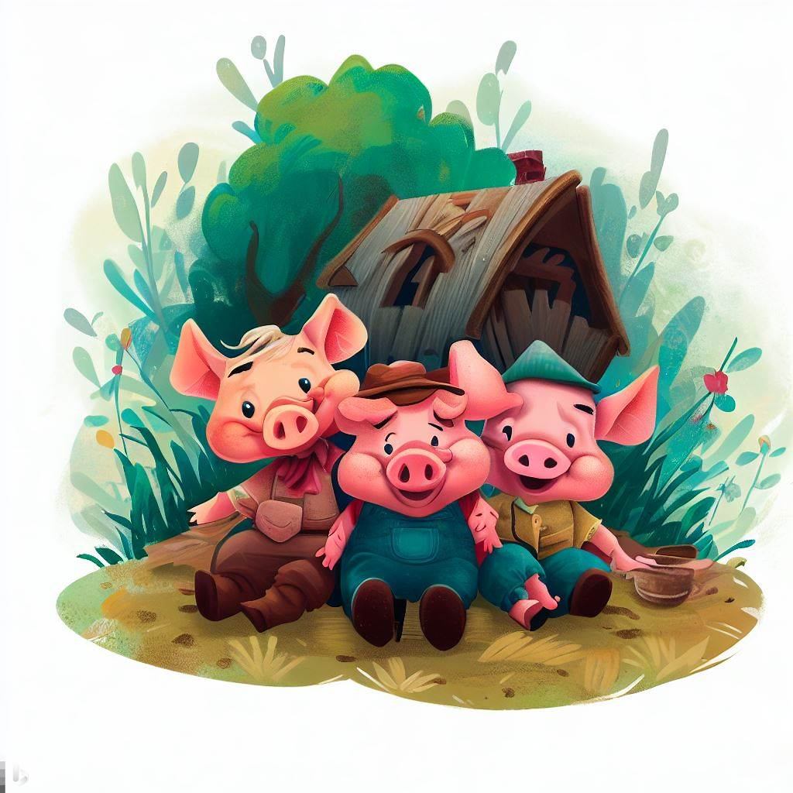
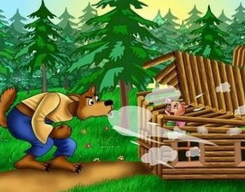
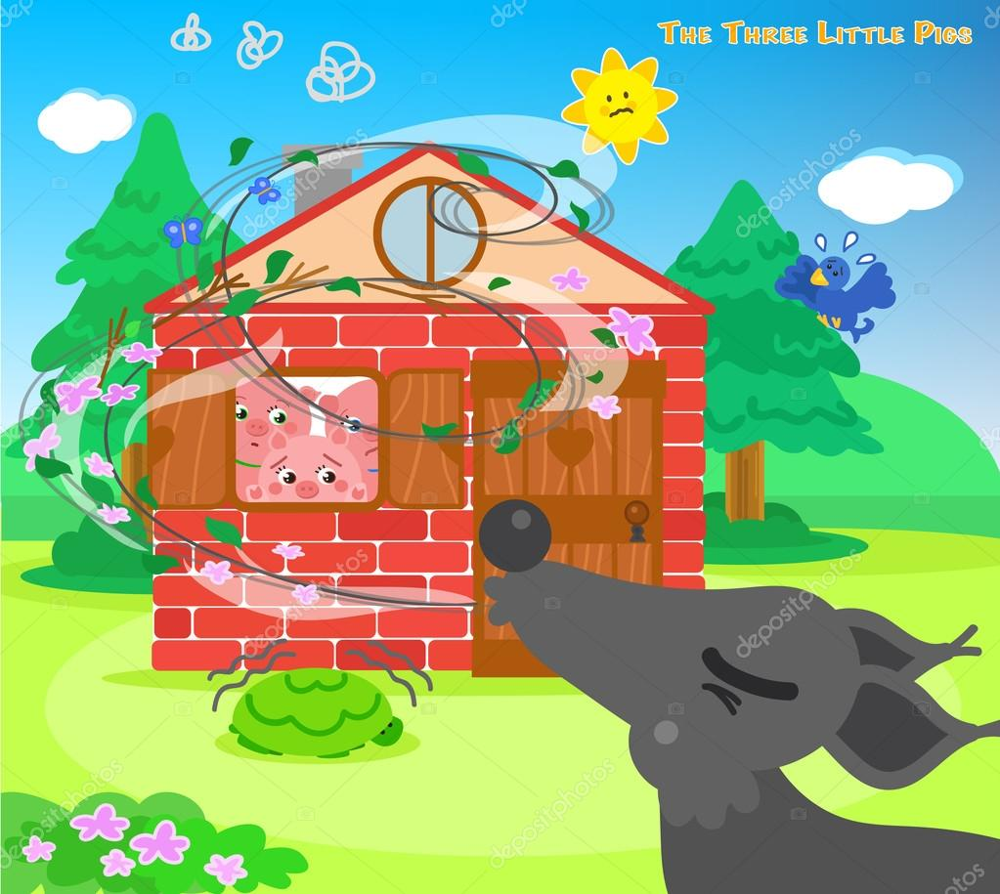
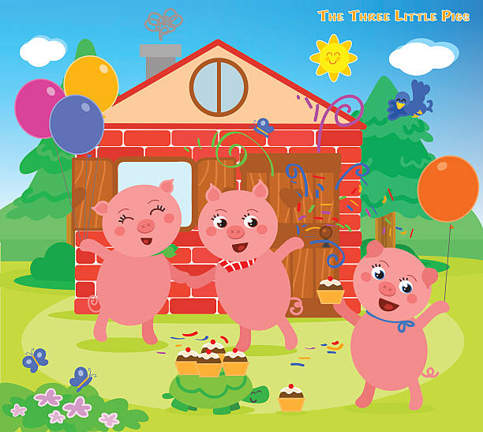

Había una vez tres cerditos que decidieron dejar el hogar de su madre para construir sus propias casas y vivir independientemente. El primer cerdito, que era un poco perezoso, decidió construir su casa de paja. Pensó que sería rápida y fácil de hacer. El segundo cerdito, un poco más trabajador, optó por construir su casa de madera. Pensó que sería un poco más resistente que la casa de paja. El tercer cerdito, el más trabajador y astuto de los tres, decidió construir su casa de ladrillos. Sabía que llevaría más tiempo y esfuerzo, pero sería mucho más segura y resistente.

El lobo, furioso por no haber atrapado al primer cerdito, se dirigió a la casa de madera del segundo cerdito. Nuevamente sopló y sopló, y la casa de madera tembló, pero no cedió tan fácilmente como la de paja. Aun así, el lobo finalmente logró derribarla y el segundo cerdito huyó hacia la casa de su hermano de ladrillos en busca de seguridad.

Cuando el lobo llegó a la casa de ladrillos del tercer cerdito, se dio cuenta de que no sería tan fácil destruirla. Sopló con todas sus fuerzas, pero la casa de ladrillos se mantuvo firme. Frustrado y hambriento, el lobo intentó encontrar una manera de entrar, pero el tercer cerdito era demasiado astuto y la casa era demasiado fuerte. Eventualmente, el lobo se rindió y se alejó, derrotado.

Finalmente, los tres cerditos aprendieron la importancia del trabajo duro, la planificación y la construcción sólida. El cerdito perezoso aprendió que tomar atajos puede llevar a resultados peligrosos, mientras que el cerdito astuto aprendió que la preparación y la perseverancia valen la pena en el largo plazo. Juntos, vivieron felices y seguros en su casa de ladrillos, sabiendo que habían superado el desafío del lobo gracias a su ingenio y esfuerzo.
